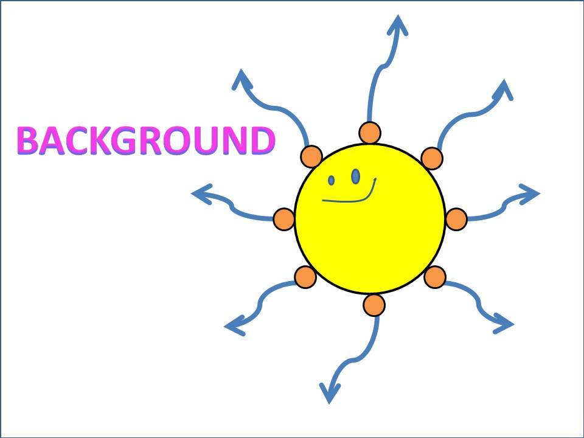

HOME
BACKGROUND
PROJECT
EXPERIMENT
ABOUT US

MOTIVATION
DNA ORIGAMI
GOLD PARTICLE
motivation
We have started our project focusing on light reflection and have set a goal to establish system that can change the color of the liquid by temperature. At first we tried to make a sheets that reflects specific light. By using DNA origami, we planned to arrange the gold nanoparticles spread regularly on a surface of DNA sheet and set the distance between particles that reflect particular light. But we could not design such a DNA sheet with particles. The size of one DNA origami is 70×100nm and it is not enough to arrange particles with sufficient distance. It means that our DNA sheet could not reflect visible light. So we have changed out project. By binding multiple DNA origami, we aim to make a ultraviolet-reflecting DNA sheet. Applying this technology, we may be able to use this sheet as a novel transparent UV cut material which could be used for glasses and windows, for instance.
DNA ORIGAMI
The first report that uses DNA as nano material is said to by a group of Nadrian Seeman, in 1982. In 1998,the same group has succeeded in making a two-dimensional sheet structure arranging a plurality of DNA molecules to the plane as raft. In 2006, Paul Rothemund succeeded in creating " DNA origami " made from a single very long DNA derived from natural virus and the short DNA. The frame is made with long DNA and the short DNA acts as a stapler, determing the shape as a whole. We can make various planar structures in this way.
About gold nanoparticles
Gold nanoparticles show a specific optical property that is generally called localized surface plasmon resonance (LSPR).
The interaction between gold nanoparticles and light is strongly affected by the environment, the size of particles and its physical form. The oscillatory electric field of light, which is transmitted nearby the colloidal nanoparticles, interacts with free electron, and causes the electrical charge to vibrate concertedly in a way that resonates with the frequency of visible light.
This resonant vibration itself is known as SPR, namely surface plasmon resonance. When small (approximately 30 nm) gold nanoparticles are monodispersed, due to LSPR, blue to green light of the spectrum (450nm) gets absorbed and reddish light around the wavelength of 700nm is reflected. Therefore, a reddish color can be observed. When the particle diameter is larger, the wavelength of SPR shifts to a longer one, and becomes closer to red. As a result, the red light is absorbed and the blue light is reflected, so the solution turns to pale blue or purple. When the particle diameter is even larger and approaches its limit of size, the SPR wavelength shifts to the infrared range, and most of the visible light gets reflected, therefore, the solution becomes transparent or translucent. SPR can be adjusted by altering the size or shape of the nanoparticle, so it is possible to create nanoparticles, which have various optical properties. In our project, we design an optical filter that reflects ultraviolet ray.